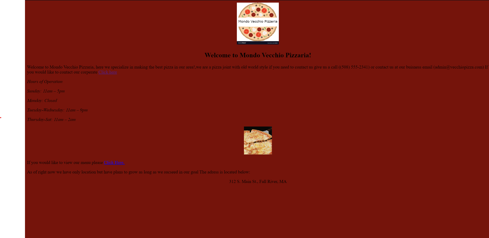

Alright, so lets take a look at this website we put together back when we were just freshmen at OC. The whole idea was to whip up a basic restaurant website, nothing too fancy. Looking back at it now, I have to admit, the color scheme could've used some serious work. But we got the job done, kept it simple and to the point. Even threw in a simple image and some links showcasing stuff like our school's site – that was pretty advanced for us at the time.
It's funny thining about it now because back then, just getting a website up and running felt like a huge achievement. We were trying new things, figuring things out as we went along. Sure, the design might make us cringe a bit today, but it's all part of the learning process. Looking back, I can't help but feel a sense of pride knowing we tackled something that seemed so daunting at the time and came out on top, even if it's just a humble little restaurant website.

Sophmore Work
In the following image it is seen yet another website. This website I made my sophmore year here at OC, It was a challenge indeed. I incorperated many new things that I had learned throughout the year, One of which being better color schemes.
The new things that were incorperated into this website was easier navigation including more links to more pages on a website, And references to more outside sources. I even added in something to make scrolling look better than it did before. I was able to split some of the pages up to allow more content in a limited amount fo space to help prevent scrolling which was yet another great accomplishment.
I think overall this was the best choiice to showcase on my portfolio due to the fact that is showcased my improvements since the final year. I think I still couldve made it look a bit better but for the time it was great. I showcased many different types of foods, And even included the recipes and cook times for each recipe.
Senior Work
The project that is seen below is a video of a game that I have been working on in my senior year of shop. It is a game that is very well known and it is PacMan. Although it seems incomplete it is very close to being done.
I have leared from this project that PacMan is indeed not an easy game to make, every ghost has its own path and pattern to follow along with rules in which it can follow the player. The game has taught me that even the most simple things can turn into something that is rather advanced and complicated to make. Overall I am proud of this game and I look forward to completing it in free time and time to come.